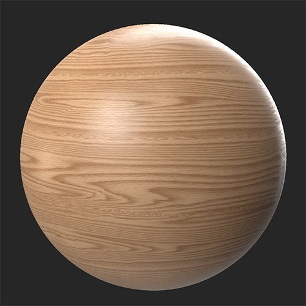
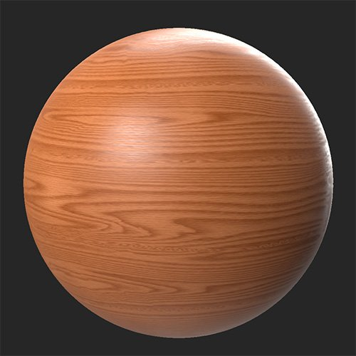

In: Adjustments
Colorize lets you add color to a selection of channels without losing detail.
While the Colorize filter lets you modify the normal channel, it's not a good idea to do so unless you have a good understanding of how the normal channel works and what the impact will be on your material. This is an advanced function that should generally only be needed in specific circumstances.
In these images the Colorize filter has been used to adjust the base color to produce a much richer wood material.


Basic parameters
The parameters available in this section change based on Channel Selection.